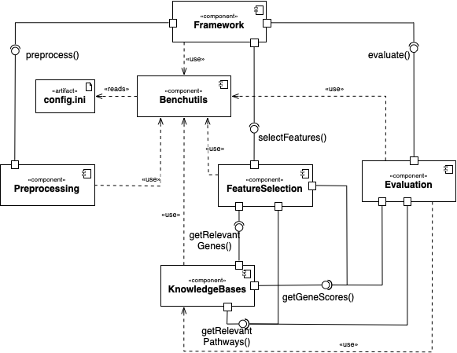

System Architecture¶
Components Architecture¶
The image below describes the system components and their interaction points. The interfaces correspond to concrete methods (see the actual components’ class diagrams).
{kind=link}
preprocessing Class Diagram¶
This module contains all classes related to preprocessing.
Every preprocessing functionality is encapsulated in its own class, which must inherit from the abstract preprocessing.Preprocessor class (here marked in grey) and implement its preprocessing.Preprocessor.preprocess() method
{kind=link}
featureselection Class Diagram¶
This module contains all classes related to feature selection.
Every feature selector is encapsulated in its own class, which must inherit from the abstract featureselection.FeatureSelector class or similar (abstract classes are marked in grey) and implement its featureselection.FeatureSelector.selectFeatures() method.
{kind=link}
knowledgebases Class Diagram¶
This module contains all classes related to external knowledge retrieval.
Every knowledge base is encapsulated in two classes, which must inherit from the abstract knowledgebases.KnowledgeBase class (the interface to the other components) and bioservices’ REST class (the interface to the online web service). Abstract classes are marked in grey.
{kind=link}
evaluation Class Diagram¶
This module contains all classes related to evaluation functionality.
Every evaluation functionality is encapsulated in its own class, which must inherit from the abstract evaluation.Evaluator class (abstract classes are marked in grey) and implement its evaluation.Evaluator.evaluate() method.
{kind=link}